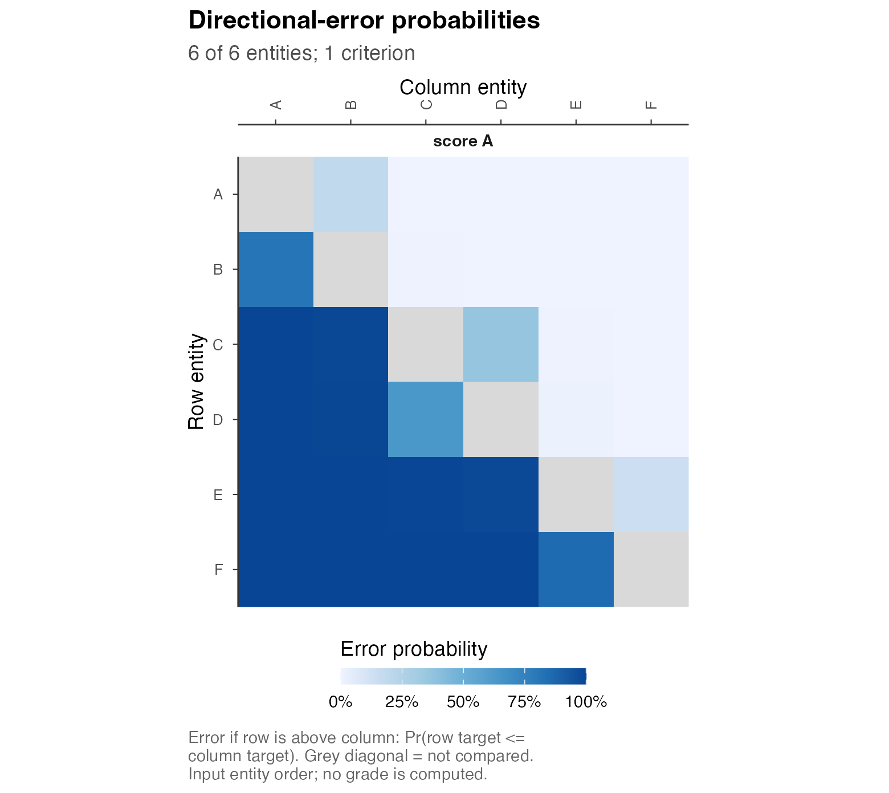

Preparing your posterior draws and comparison probabilities
Source:vignettes/a5-your-posterior-results.Rmd
a5-your-posterior-results.Rmdpostrank does not fit statistical models. You fit your
model outside the package (for example in Stan, brms, or JAGS) and
supply posterior draws, a conditional normal or mixture distribution, or
comparison probabilities that you have already computed. Your results
depend on the posterior you supply, and any dependence across entities
or criteria that was dropped before export cannot be recovered inside
postrank.
This article builds a one-criterion draw input, extends it to two criteria, computes analytic comparison probabilities from a normal law, and imports an external probability matrix. All examples run without an optimization solver. In an empirical study, replace the synthetic draw generator below with output from your fitted model and describe that model and its sampling history.
Targets and draw array layout
Entity IDs identify the same sites, schools, employers, or areas
throughout an analysis. Use character IDs so leading zeros (such as
"01001") are kept. Criterion IDs name the target quantities
being compared, along with their units, time period, and priority
direction. Larger values on the oriented scale mean higher priority, and
grade 1 is the highest-priority group.
Joint posterior draws are stored as a three-dimensional numeric array
with dimensions draws x entities x criteria
(S x n x K), in which every draw holds one value for every
entity and every criterion from the same posterior state. With a single
criterion (K = 1), keep the third dimension as an
S x n x 1 array rather than dropping it to a matrix.
| Posterior information you have | Constructor | What to preserve |
|---|---|---|
| Joint posterior draws across entities and criteria | postrank_draws() |
Entity and criterion axes, within-draw pairing, and
sampling history ("iid" or "mcmc") |
| Separate draw matrices for each criterion | postrank_draws(..., metadata = ...) |
Joint entity vectors within each criterion and each fit’s sampling history |
Posterior draws from the posterior
package |
postrank_draws() (or
as_postrank_posterior() for draws_array) |
Variable mapping to
(entity_id, criterion_id) and chain/iteration
coordinates |
| Conditional normal posterior | postrank_gaussian_coefficients() |
Means, covariance matrices, conditional-independence scope, and source metadata |
| Shared-state normal mixture | postrank_mixture_coefficients() |
Shared hyperparameter states, weights, and conditional moments |
| Discrete finite posterior with exact rational weights | as_postrank_draws() |
Complete joint states and integer numerators over a common denominator |
| Precomputed comparison probabilities | postrank_probabilities() |
Event direction, source conditioning, zero-tie assumption, and any symmetry adjustment |
The last four constructors apply only when that normal law, mixture, finite distribution, or probability table is part of your intended statistical analysis; a table of marginal means and standard errors alone does not define a joint posterior over entity pairs.
Building a one-criterion draw input
pr_tutorial$law defines independent normal distributions
for six fictional sites (A through F) in
illustrative standardized units. Below we simulate S = 512
independent joint draws for score_A from that synthetic
law. With real data, export the posterior draws of your target
quantities directly at full precision instead of simulating independent
normal draws from marginal summaries (unless independent normal
posteriors are your actual model).
library(postrank)
law <- pr_tutorial$law
ids <- rownames(law$means)
S <- 512L
sd_A <- sqrt(law$covariance["score_A", "score_A", ])
set.seed(725)
values <- array(NA_real_, c(S, length(ids), 1L),
dimnames = list(draw = NULL, entity = ids, criterion = "score_A"))
for (i in seq_along(ids)) {
values[, i, 1] <- rnorm(S, law$means[i, "score_A"], sd_A[i])
}
dim(values)
#> [1] 512 6 1For a numeric draw array, postrank_draws() requires a
sampling regime ("iid" for independent draws
or "mcmc" for Markov chain draws) and eight declaration
blocks describing the draws and their source.
postrank_describe() collects these descriptions as plain
arguments. It rejects generic placeholders such as "TBD",
"unknown", and "none" in scientific
descriptions and in the shared label. Criterion names and
data_version must be nonempty identifiers. For example,
data_version = "none" can record a simulation with no
versioned source data.
declarations <- postrank_describe(
estimand = c(score_A = "Site-level latent score A in the specified Gaussian law"),
population = "Six fictional sites A through F",
time = "Static tutorial scenario; no observed time period",
units = law$units,
data = "No observations; means and variances fixed by pr_tutorial$law",
model = "Independent normal site scores with the supplied means and variances",
identification = "Each target is a directly specified coordinate of the fixed law.",
joint = "Each draw holds all six sites from one independent state of the score_A law.",
sampling = "512 independent draws from rnorm() after set.seed(725); no warmup or thinning.",
ties = "Independent continuous normal scores have positive variances, so exact equality has probability zero.",
software = "Base R rnorm()",
source = "Array values generated from pr_tutorial$law in this article",
label = "a5-iid-score-A",
data_version = "1",
values = values
)
draws <- postrank_draws(values, regime = "iid", declarations = declarations)
draws$entity_ids
#> [1] "A" "B" "C" "D" "E" "F"
draws$criterion_ids
#> [1] "score_A"Every scientific description in postrank_describe() is
written by you; the helper fills in only the repeated identifier fields
(from label) and the array format string (from
values), and population, time,
and units accept either one shared string or a character
vector named by criterion. In a hierarchical model where entities share
random effects or hyperparameters, keep all entities paired within each
posterior draw: shuffling draws separately by entity preserves marginal
intervals while changing the pairwise comparison probabilities.
By default (orientation = "higher" in
postrank_draws()), larger raw values mean higher priority.
When smaller raw values mean higher priority (for example, chronic
absence or incarceration rates), pass the raw draws to
postrank_draws() and supply a full or partial
criterion-named vector of "higher" and
"lower", such as
orientation = c(rate = "lower") (orientation
is an argument of postrank_draws(), not
postrank_describe(), and any omitted criterion defaults to
"higher"). That negates "lower" criteria once
and records the sign flip in targets; do not negate the raw
draws beforehand as well, or you will flip the sign twice. Downstream
report-card means and intervals stay on that negated scale, so negating
them back to raw rates swaps lower_<criterion> and
upper_<criterion>; see Grading California schools on chronic
absence for an example.
Pairwise comparison probabilities
pairwise <- postrank_pairwise(draws)
round(pairwise$e[, , "score_A"], 3)
#> entity_j
#> entity_i A B C D E F
#> A NA 0.184 0.000 0.000 0.000 0.000
#> B 0.816 NA 0.000 0.000 0.000 0.000
#> C 1.000 1.000 NA 0.395 0.004 0.000
#> D 1.000 1.000 0.605 NA 0.016 0.002
#> E 1.000 1.000 0.996 0.984 NA 0.152
#> F 1.000 1.000 1.000 0.998 0.848 NAEntry e[i, j, k] estimates
,
the posterior expected error if the report places entity i
in a higher-priority grade than entity j on criterion
k. Diagonal entries are NA because an entity
is not compared with itself. An estimated 0 off the
diagonal means that
did not occur among the 512 draws; it does not prove that
the true probability under the continuous law is zero.
When subsetting a multi-criterion draw array down to one criterion,
use drop = FALSE
(larger_array[, , "score_A", drop = FALSE]) so the third
dimension stays intact. Keep the draws at full precision. Rounding can
create exact ties between entities, and postrank_draws()
stops on exact ties; adding random noise to break them would change the
posterior you described. For posteriors in which exact ties are real,
see ?as_postrank_tie_draws.
Multiple criteria, separate criterion fits, and MCMC history
Next we add score_B while keeping the exact same
score_A draws. In pr_tutorial$law, the two
criteria are independent within each site; in a joint model fitted to
real data, export both criteria from the same posterior draws so any
cross-criterion dependence is preserved.
two_values <- array(NA_real_, c(S, length(ids), 2L),
dimnames = list(draw = NULL, entity = ids, criterion = colnames(law$means)))
two_values[, , "score_A"] <- values[, , "score_A"]
for (i in seq_along(ids)) {
two_values[, i, "score_B"] <- rnorm(S, law$means[i, "score_B"],
sqrt(law$covariance["score_B", "score_B", i]))
}Next we describe both criteria and build the two-criterion
postrank_draws object, confirming that
score_A’s pairwise comparison probabilities are
unchanged:
two_decl <- postrank_describe(
estimand = c(
score_A = "Site-level latent score A",
score_B = "Site-level latent score B"
),
population = "Six fictional sites A through F",
time = "Static tutorial scenario; no observed time period",
units = c(score_A = law$units, score_B = law$units),
data = "No observations; means and variances fixed by pr_tutorial$law",
model = "Independent normal site scores across sites and criteria",
identification = "Each target is a directly specified coordinate of the fixed law.",
joint = "Each draw holds all six sites and both criteria from one independent state.",
sampling = "512 independent draws from rnorm(); score_A uses set.seed(725).",
ties = "Independent continuous normal scores have positive variances, so exact equality has probability zero.",
software = "Base R rnorm()",
source = "Array two_values generated from pr_tutorial$law in this article",
label = "a5-iid-score-A-and-B",
data_version = "1",
values = two_values
)
two_draws <- postrank_draws(two_values, regime = "iid", declarations = two_decl)
two_pairwise <- postrank_pairwise(two_draws)
identical(pairwise$e[, , "score_A"], two_pairwise$e[, , "score_A"])
#> [1] TRUEWhen different criteria come from separate model fits, row
s in fit 1 and row s in fit 2 do not represent
a shared posterior state. Pass those draws as a named list of
S_k x n matrices (one matrix per criterion, with every
entity paired within each row and possibly different draw counts
S_k) via
postrank_draws(matrices, metadata = criterion_metadata);
see ?postrank_draws for the metadata fields. Separate
criterion matrices support criterion-weighted expected loss, because
that loss adds expected errors criterion by criterion, whereas
probabilities for composite linear combinations or simultaneous
dominance across criteria remain unavailable:
# m1, m2: separate S_k x n draw matrices with matching entity column names;
# metadata: list describing targets, context, provenance, and per-criterion
# sampling history without cross-criterion pairing (see ?postrank_draws).
draws_cw <- postrank_draws(list(need1 = m1, need2 = m2), metadata = metadata)For Markov chain Monte Carlo (MCMC) output, record the original chain
layout. With a 3D S x n x K array in which the chains’
post-warmup iterations are stacked contiguously chain by chain (rows
1:m for chain 1, (m + 1):(2 * m) for chain 2,
and so on), pass regime = "mcmc" together with integer
chains (the number of chains),
warmup_per_chain (iterations discarded per chain before
export), and thin (1L when unthinned). The
bundled pr_toy_mcmc contains four stationary two-state
Markov chains of 512 iterations each. The generator retained every
iteration, including the first. Within each state, the three sites have
distinct targets on each criterion, so the model gives zero probability
to a between-site tie.
mcmc_draws <- postrank_draws(
pr_toy_mcmc, regime = "mcmc",
chains = 4L, warmup_per_chain = 0L, thin = 1L,
declarations = attr(pr_toy_mcmc, "law")[["declarations"]]
)
chain_history <- mcmc_draws$joint_draws$sampling$chain_history
do.call(rbind, lapply(chain_history, function(h) {
data.frame(chain = h$chain_id, retained = length(h$retained_iterations),
warmup_removed = length(h$warmup_iterations),
thin = unique(diff(h$retained_iterations)))
}))
#> chain retained warmup_removed thin
#> 1 chain1 512 0 1
#> 2 chain2 512 0 1
#> 3 chain3 512 0 1
#> 4 chain4 512 0 1If your draws are already in a posterior package object
(draws_array, draws_df, or
draws_matrix from cmdstanr or
brms), pass them to postrank_draws() with
variables, metadata, and
source_coordinates for every retained draw (or pass a
posterior::draws_array directly to
as_postrank_posterior() with variable_map,
metadata, and source_coordinates). Using the
installed synthetic generator, we can package
postrank_toy’s 32 draws as a one-chain
posterior::draws_array and verify that mapping them back
recovers the identical input_identity:
if (requireNamespace("posterior", quietly = TRUE)) {
source(system.file("examples", "make-synthetic-input.R",
package = "postrank", mustWork = TRUE))
meta <- make_postrank_synthetic_input()
vals <- meta[["joint_draws"]][["tensor"]][["values"]]
map <- meta[["joint_draws"]][["variable_map"]]
vars <- vapply(map, `[[`, "", "source_target_variable_id")
src <- array(NA_real_, c(dim(vals)[1], 1L, length(vars)),
dimnames = list(iteration = NULL, chain = "1", variable = vars))
for (m in seq_along(map)) {
src[, 1, vars[m]] <- vals[, map[[m]][["entity_id"]], map[[m]][["criterion_id"]]]
}
coords <- lapply(seq_len(dim(vals)[1]), function(s) {
list(slot_id = dimnames(vals)[["draw"]][[s]], iteration_index = s, chain_index = 1L)
})
meta[["joint_draws"]][["tensor"]][["values"]] <- NULL
from_posterior <- postrank_draws(posterior::as_draws_array(src),
variables = map, metadata = meta, source_coordinates = coords)
identical(from_posterior[["validation"]][["input_identity"]],
postrank_toy[["validation"]][["input_identity"]])
}
#> [1] TRUEAnalytic probabilities from a normal or mixture posterior
When your conditional posterior is normal,
postrank_gaussian_coefficients() computes the pairwise
directional-error probabilities analytically without Monte Carlo
simulation. Below we evaluate the same score_A normal law
analytically and compare three site pairs against the 512-draw Monte
Carlo estimates:
analytic <- postrank_gaussian_coefficients(
means = law$means[, "score_A", drop = FALSE],
covariance = law$covariance["score_A", "score_A", , drop = FALSE],
conditional_independence = "entities_given_shared_h",
provenance = pr_tutorial$one$provenance
)
selected_pairs <- rbind(c(1L, 2L), c(3L, 4L), c(5L, 6L))
knitr::kable(data.frame(
row = ids[selected_pairs[, 1]], column = ids[selected_pairs[, 2]],
draw_estimate = pairwise$e[, , 1][selected_pairs],
analytic = analytic$e[, , 1][selected_pairs]
), digits = 4, row.names = FALSE)| row | column | draw_estimate | analytic |
|---|---|---|---|
| A | B | 0.1836 | 0.1884 |
| C | D | 0.3945 | 0.3618 |
| E | F | 0.1523 | 0.1444 |
Both columns target the same normal law: draw_estimate
has Monte Carlo variation across the 512 simulated draws,
while analytic evaluates the normal cumulative distribution
function of each pairwise score difference.
postrank_gaussian_coefficients() requires named entity and
criterion axes, symmetric positive-definite covariance matrices, a
stated conditional_independence scope, and
provenance metadata recording where the moments came
from.
In a hierarchical model where entities are conditionally normal given
shared hyperparameters, postrank_mixture_coefficients()
averages those conditional Gaussian probabilities across hyperparameter
states (with fixed mixture weights or hyperparameter MCMC metadata),
preserving the cross-entity dependence induced by the shared
hyperparameters. For discrete posteriors defined on a finite list of
joint states with exact rational probabilities,
as_postrank_draws() stores integer mass numerators over a
common denominator (and postrank_pairwise() can keep exact
rational probabilities when the optional gmp package is
installed).
Importing precomputed comparison probabilities
When an external numerical integration routine computes pairwise
comparison probabilities directly, pass them to
postrank_probabilities() as a named square matrix (one
criterion) or an entity x entity x criterion array,
together with event ("directional_error" when
entry [i, j] is
,
or "higher_priority" when entry [i, j] is
).
Here we package the analytic score_A probabilities together
with matching 90% marginal intervals:
means <- law$means[, "score_A", drop = FALSE]
level <- 0.90
half_width <- qnorm((1 + level) / 2) * sd_A
probability_input <- postrank_probabilities(
analytic$e[, , "score_A"], criterion = "score_A",
event = "directional_error", zero_ties = TRUE, margin = 0,
source = list(
kind = "analytic_reference",
description = "Normal-CDF comparisons for independent site scores in pr_tutorial$law",
conditioning = law$conditioning
),
targets = c(score_A = "Illustrative standardized site score A; larger is higher priority"),
summaries = list(
means = means, same_targets = TRUE,
description = "Means and central equal-tail intervals from the same fixed normal site laws",
lower = sweep(means, 1, half_width, "-"),
upper = sweep(means, 1, half_width, "+"), level = level
)
)
probability_input$correction$method
#> [1] "none"Row and column entity IDs must match in the same order, diagonal
entries must be NA, off-diagonal entries must lie in
[0, 1], and opposite directions must sum to 1
within tolerance (zero_ties = TRUE and
margin = 0). If numerical quadrature leaves tiny
reverse-sum discrepancies, set correction = "symmetric"
with an explicit tolerance; the object records the raw
probabilities and the largest adjustment made, which measures only that
symmetrization step rather than quadrature or model error.
postrank_plot_pairwise(probability_input, max_entities = NULL)
Open full-size figureDirectional-error probabilities Pr(theta_i <= theta_j) for Score A across the six sites. Gray diagonal cells mark self-comparisons (NA).
Optional summaries supply the posterior means and
equal-tail intervals used on report cards and must describe the same
oriented targets and units as the comparison probabilities. Because only
the endpoints at level = 0.90 are stored here, other
interval levels cannot be computed from probability_input,
and draw-based Monte Carlo diagnostics are unavailable. See Grading large employers on race and
gender contact gaps for an empirical-Bayes case study built with
postrank_probabilities().
Reading and writing JSON draw files
To exchange posterior draws across languages or archive them with
their descriptions, use write_postrank_draws() and
read_postrank_draws(). The JSON file stores
schema_version = "applied-0.1". The object in R keeps that
value in input_schema_version and uses
schema_version = "0.1.0" for its in-memory layout. The
package ships a complete example file,
examples/synthetic-iid.json, holding the same 32-draw,
three-entity ("001", "site-B",
"site C"), two-criterion synthetic normal sample as
postrank_toy:
path <- system.file("examples", "synthetic-iid.json",
package = "postrank", mustWork = TRUE)
toy_draws <- read_postrank_draws(path)
toy_draws[c("input_schema_version", "schema_version")]
#> $input_schema_version
#> [1] "applied-0.1"
#>
#> $schema_version
#> [1] "0.1.0"
toy_draws[["entity_ids"]]
#> [1] "001" "site-B" "site C"
toy_draws[["criterion_ids"]]
#> [1] "need_A" "need_B"
dim(toy_draws[["joint_draws"]][["tensor"]][["values"]])
#> [1] 32 3 2The companion script examples/make-synthetic-input.R
defines make_postrank_synthetic_input() without running it
on source() and restores the caller’s random-number state;
regenerating the list and converting it with
as_postrank_draws() matches the stored sample within
1e-12 across platforms:
generator <- system.file("examples", "make-synthetic-input.R",
package = "postrank", mustWork = TRUE)
source(generator)
toy_spec <- make_postrank_synthetic_input()
rebuilt <- as_postrank_draws(toy_spec)
rebuilt_values <- rebuilt[["joint_draws"]][["tensor"]][["values"]]
stored_values <- toy_draws[["joint_draws"]][["tensor"]][["values"]]
max(abs(rebuilt_values - stored_values)) <= 1e-12
#> [1] TRUE
toy_spec[["targets"]][[1]][c("criterion_id", "estimand", "units")]
#> $criterion_id
#> [1] "need_A"
#>
#> $estimand
#> [1] "Toy latent site need under the explicitly specified independent Normal target law"
#>
#> $units
#> [1] "toy real-valued need units"write_postrank_draws() formats numbers at 17-digit
precision so reading the file back reproduces the floating-point draw
array identically, while read_postrank_draws() rejects
duplicate JSON keys, malformed numbers, out-of-range integers, and
invalid Unicode surrogates:
copy_path <- tempfile(fileext = ".json")
write_postrank_draws(toy_draws, copy_path)
roundtrip <- read_postrank_draws(copy_path)
identical(roundtrip[["joint_draws"]][["tensor"]][["values"]], stored_values)
#> [1] TRUE
unlink(copy_path)Input validation versus statistical model checking
Input validation checks object structure and that required
descriptions are present; it does not check whether your statistical
model is appropriate, whether targets are identified, or whether MCMC
chains have converged. Omitting any of the eight required blocks in
postrank_declarations() stops with an error, and we can
inspect the validation flags returned by
validate_postrank_draws() directly:
tryCatch(
postrank_declarations(targets = declarations[["targets"]],
context = declarations[["context"]]),
error = conditionMessage
)
#> [1] "$.declarations: missing required scientific declarations: provenance, origin, identification_note, tie_justification, joint_generation, sampling_provenance (they are not inferred or filled with placeholders)"
validation <- validate_postrank_draws(draws)
validation[c("valid", "schema_checked", "source_values_checked",
"jointness_verified", "convergence_verified")]
#> $valid
#> [1] TRUE
#>
#> $schema_checked
#> [1] FALSE
#>
#> $source_values_checked
#> [1] FALSE
#>
#> $jointness_verified
#> [1] FALSE
#>
#> $convergence_verified
#> [1] FALSEvalid is TRUE because the array dimensions,
axis names, finite values, ties, and eight required descriptions passed
the package’s R checks. schema_checked is
FALSE because this route uses no external JSON Schema
validator. source_values_checked is FALSE
because the example supplied an array directly. When you import a
posterior object, as_postrank_posterior()
compares mapped values with that source and records the result.
jointness_verified and convergence_verified
remain FALSE on both routes. Assessing dependence and
convergence requires evidence from the fitted model and its sampling
run.
| Function or input | What it checks |
|---|---|
postrank_describe() |
Checks the description arguments and builds a bundle
with postrank_declarations(). If it derives
format from values, it checks for a
three-dimensional numeric array and records its type and
dimensions. |
postrank_declarations() |
Checks the eight required blocks and rejects generic
placeholders in the descriptions. The full form treats
targets$criterion_id, context$data_version,
and origin$fit_id as nonempty identifiers exempt from the
placeholder check. |
Numeric-array postrank_draws()
|
Rechecks the declarations and validates the array axes, entity and criterion IDs, finite values, ties, and sampling layout. |
postrank_draws_from_array() |
Validates the required declaration fields, the draw array, and its sampling layout. The placeholder check applies only in the friendly constructors above. |
as_postrank_draws() |
Validates an in-memory input’s required fields, coordinates, and numeric contents. |
read_postrank_draws() |
Parses the JSON file, checks JSON syntax and duplicate
keys, then calls as_postrank_draws() on the decoded
input. |
write_postrank_draws() |
Validates the supplied input with
as_postrank_draws(), encodes it as JSON, and checks the
encoded file structure before saving. |
Criterion-wise matrix list
postrank_draws(list(...), metadata = ...)
|
Matches each matrix to its criterion and validates its coordinates and sampling metadata. |
as_postrank_posterior() |
Checks the posterior object’s draw coordinates and variable mappings, then compares each mapped numeric value with the source. |
Once an input (draws, mcmc_draws,
analytic, or probability_input) is ready, pass
it to postrank() with your chosen policy settings and
solver. Gurobi is the default solver and requires a license; the call
below (eval = FALSE) selects the open-source HiGHS solver
(install.packages("highs")):
result <- postrank(draws, weights = c(score_A = 1), tau = 0.25,
G_max = 3L, backend = "highs", level = 0.90,
control = postrank_control(time_limit = 30), fragility = FALSE)Where next
- For a complete walkthrough from input to grades and report cards, see Getting started: grading with one or two criteria.
- To inspect result tables, solver statuses, and CSV/RDS/HTML exports, see Reading and exporting grading results.
- For the mathematical details of each posterior representation, see Posterior representations and pairwise comparison probabilities, and for posteriors with positive probability of exact ties, see Exact ties in the posterior versus withheld comparisons.